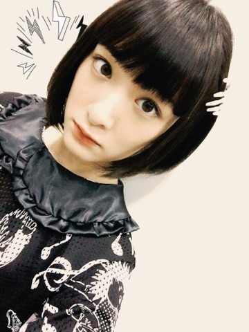
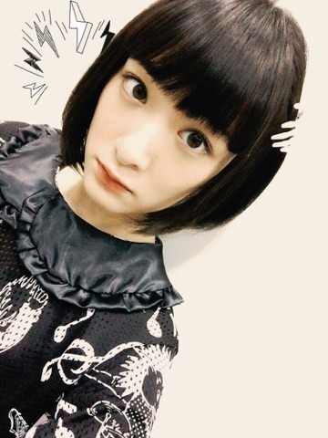
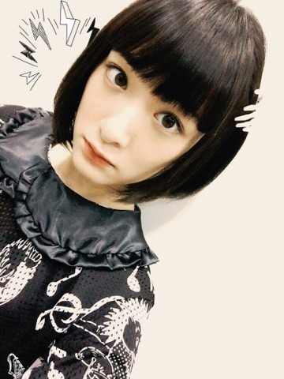
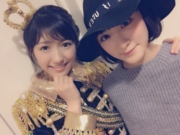

| 2015/11 22 Sun | 寒い日の太陽の暖か さは至高。 |
生駒ちゃんですヽ(・∀・)ノ
今日は太陽ノックの最後の個別握手会でした！
今日は、第2部をお休みしてしまい申し訳ございませんでした。
ちょっといろいろ体調とか悪いのが重なってしまいました。
ゆっくりお休みさせて頂きました。
心配かけてすみませんでした。
皆さんにせっかくの握手会なのに心配をかけさせてしまって。。。
でももう大丈夫なので皆さん来週も握手会宜しくお願い致します(＞人＜;)
お洋服はMILKのお洋服を着ました
 


全身撮れませんでした(´；ω；｀)
また着た時に撮りますねヽ(・∀・)ノ
そして19日木曜日はベストヒット歌謡祭でしたヽ(・∀・)ノ

大天使まゆゆさんにも久しぶりに会えたよ〜ヽ(・∀・)ノヽ(・∀・)ノヽ(・∀・)ノ
生放送が久しぶりですごく緊張しました〜
年末は沢山出させて頂くのでパフォーマンス磨いて頑張ります！！
へばなっ☆彡
コメント(513)
2015/11/22 23:00